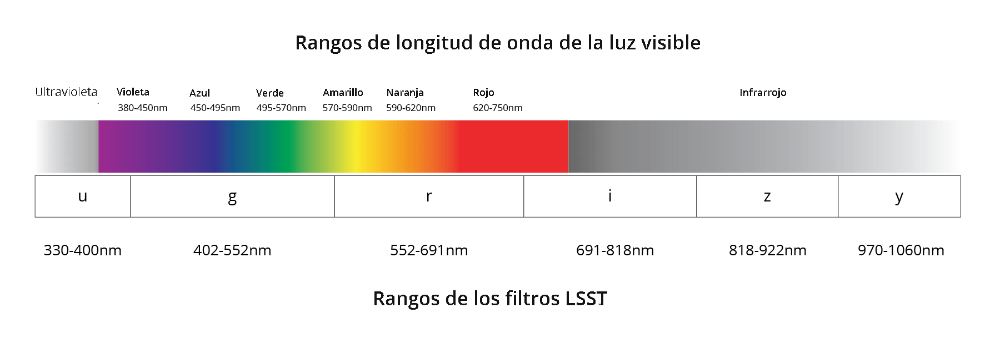
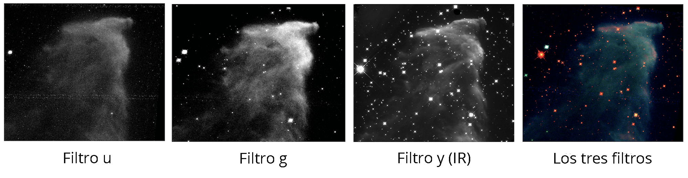
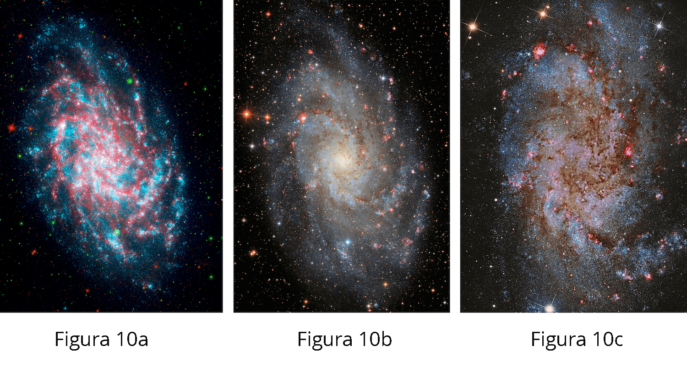

Pintando el Universo


Casi todo lo que los astrónomos saben acerca de las estrellas y galaxias en el Universo proviene de la luz que recibimos de estos objetos. Afortunadamente, esa luz contiene una gran cantidad de información. En esta investigación, aprenderás cómo los astrónomos usan la luz y los filtros para comprender cosas como galaxias distantes, nebulosas y diferentes tipos de estrellas.
Hay muchos tipos de radiación electromagnética: ondas de radio, infrarrojo, visible, ultravioleta (UV), rayos X, etc. Los astrónomos se refieren a todos estos tipos de radiación como luz. Cada tipo de luz tiene un rango específico de longitudes de onda y energías. El tipo de luz que podemos ver con nuestros ojos se llama luz "visible".

Figura 1: El Espectro Electromagnético. Adaptado de https://imagine.gsfc.nasa.gov/Images/science/EM-spectrum-full.jpg
La luz visible contiene todos los colores del arco iris, como se muestra a continuación. Los diferentes colores corresponden a diferentes longitudes de onda y energías. Dentro del rango de luz que podemos ver, la luz roja tiene la energía más baja y las longitudes de onda más largas; el violeta tiene la energía más alta y las longitudes de onda más cortas.

Figura 2: Espectro visible. Adaptado del Daltonismo: http://www.daltonism.org.uk/2018/01/rainbows/
Las cámaras digitales no pueden ver color. Solo pueden medir la cantidad de luz que ilumina el sensor de imagen. Para construir una imagen en color, usamos filtros. Un filtro está diseñado para permitir que sólo ciertas longitudes de onda (o colores) de la luz pasen a través de él. Todas las demás longitudes de onda (o colores) son bloqueadas. La Figura 3a muestra un ejemplo de cómo un filtro naranja transmite algunas longitudes de onda de luz mientras bloquea otras.
Hay filtros como este dentro de una cámara digital (por ejemplo, la de un teléfono móvil). Se colocan pequeños filtros rojos, verdes y azules sobre los píxeles del sensor de imagen como se muestra a continuación en la Figura 3b. Cuando tomas una foto, tu cámara mide la luz simultáneamente a través de los tres filtros.


Figura 3a: Filtro naranja. Crédito: P. Marenfeld (NOAO / AURA / NSF). Figura 3b: Diagrama de un sensor de imágen con disposición de filtro. Crédito: Credit.
Para comprender mejor cómo funcionan los filtros, experimenta con la herramienta de filtros que se presenta a continuación::
Prisma
Luz blanca →
Al mirar un arcoíris, podrías pensar que necesitamos usar (al menos) siete filtros para producir una imagen en color. Pero en realidad solo necesitamos tres. Esto se debe a que nuestros ojos contienen sensores llamados "conos" que recogen luz roja, verde y azul. Nuestro cerebro tiene un método para transformar las cantidades relativas de luz roja, verde y azul medidas por los conos en una imagen en color. Esto se conoce como el "proceso de tres colores". Extraordinariamente, nuestros ojos pueden ver más de un millón de colores diferentes con este método. Ahora vamos a explorar cómo funciona el proceso de tres colores.
A continuación hay una serie de imágenes. Las tres primeras son imágenes obtenidas con filtros rojo, verde y azul. Como mencionamos anteriormente, las cámaras digitales no pueden ver el color, por lo que cada una de las tres imágenes de luz filtrada comienza como una imagen en blanco y negro. Luego se selecciona un color (rojo, verde o azul) para colorear cada una de las imágenes filtradas, y finalmente, las tres imágenes se combinan para crear la imagen en color.
Comienza observando lo luminosas que se ven las poleras de los niños en las imágenes en blanco negro tomadas a través de cada filtro. Piensa en lo que es similar y lo que es diferente en ellas.

Figura 4: Comparación de los diferentes tipos de luz que pasan a través de los filtros.
| ¿Luminosa u obscura? | Polera roja | Polera verde | Polera azul |
|---|---|---|---|
| Filtro rojo | |||
| Filtro verde | |||
| Filtro azul |
Busca un patrón en las respuestas en la tabla de arriba.
"La polera roja se ve en la imagen tomada a través del filtro rojo porque el filtro rojo” la luz roja."
“La polera verde se ve en la imagen tomada a través del filtro rojo porque el filtro rojo la luz verde".
Aquí están las mismas imágenes, ahora coloreadas con su color correspondiente, y la imagen resultante al combinarlas:

Figura 5: Imágenes filtradas coloreadas.
La misma imagen aparece en la siguiente herramienta para mezclar colores.
Las personas a menudo se preguntan si las imágenes astronómicas muestran los objetos "como se ven de verdad", es decir, como los verían con sus ojos. Ten en cuenta que los telescopios no solo agrandan objetos distantes, sino que también recogen mucha más luz que tus ojos. La mayoría de los objetos astronómicos serían demasiado débiles para que los vieras, incluso si estuvieras mucho más cerca de ellos que lo que estás en la Tierra.
Además, las imágenes de los telescopios a menudo se hacen usando luz con longitudes de onda que tus ojos no pueden ver. Esta luz invisible se recoge después de pasarla a través de un filtro que transmite un rango específico de longitudes de onda. Por ejemplo, un filtro ultravioleta (filtro u) transmite luz con longitudes de onda más cortas que las de la luz violeta y que tiene una energía demasiado alta como para que nuestros ojos la puedan ver. Del mismo modo, los filtros de infrarrojos transmiten luz con longitudes de onda que están "debajo del rojo" y tienen una energía demasiado baja para que nuestros ojos puedan verlos. Los astrónomos usan estos filtros adicionales porque cada tipo de luz revela información diferente sobre el universo, por lo que observar la luz en todas estas longitudes de onda nos permite aprender más sobre los objetos en el espacio. En cierto sentido, los telescopios nos dan una visión sobrehumana. De hecho, ¡esa es la razón por la que los construimos
Usos de los filtros astronómicos.La cámara LSST contiene seis filtros (Figura 6), identificados por las letras “u”, “g”, “r”, “i”, “z” e “y”. Tres de estos filtros (“g”, “r”, “y”) transmiten luz visible que nuestros ojos pueden ver. El filtro “u” transmite luz ultravioleta. Los filtros “z” e “y” transmiten solo luz infrarroja.
Figura 6: Comparación de rangos de longitud de onda de color visible con filtros LSST (nm = nanómetros)
Como ya se mencionó, la luz ultravioleta e infrarroja está más allá del alcance de la visión humana. Sin embargo, los astrónomos pueden crear imágenes con estos filtros coloreando las imágenes filtradas con colores que podamos ver. Se utilizan diferentes filtros para resaltar ciertos objetos o áreas de interés. Aquí hay algunos ejemplos:
Filtros infrarrojos: Viendo a través del polvo.Uno de los usos de los filtros infrarrojos es ver a través del polvo, que dispersa la luz de longitudes de onda más cortas pero transmite la luz de longitudes de onda más largas.
La figura 7, a continuación, muestra imágenes de tres filtros y una imagen en color. Antes de combinar las imágenes filtradas, estas tuvieron que ser coloreadas. La imagen del filtro “u” fue coloreada en azul, la imagen del filtro “g” fue coloreada en verde y la imagen del filtro “y” (infrarrojo) fue coloreada en rojo. (Hay una razón particular por la que estos colores están ordenados en este orden- más sobre esto más adelante).
Figura 7: Imágenes de la Nebulosa Fantasma de los datos HST WFC3 / UVIS / IR de MAST y el Archivo de Herencia del Hubble. Cada imagen filtrada fue coloreada y combinada para hacer la imagen en color de la derecha.
Algunas galaxias son muy distantes, tan distantes que su luz, debido al desplazamiento al rojo cosmológico, es detectable sólo en las longitudes de onda infrarrojas.
Para detectar las galaxias más distantes rápidamente, se puede crear una imagen en color compuesta utilizando al menos un filtro infrarrojo. La imagen obtenida utilizando el filtro que transmite la luz con las longitudes de onda más cortas será coloreada en azul, y la obtenida utilizando el filtro que transmite la luz con las longitudes de onda más largas (infrarrojas) será coloreada en rojo. La imagen en color de la Figura 8, a continuación, se obtuvo combinando las tres imágenes filtradas y muestra las galaxias más distantes en un color muy rojo, porque son más brillantes en longitudes de onda muy largas.
Identifica una galaxia distante en las tres imágenes en blanco y negro que se presentan a continuación (Figura 8). Esta se volverá más brillante a medida que las longitudes de onda del filtro se hagan más largas. Luego búscala en la imagen en color. ¿Puedes encontrarla?

Figura 8: Galaxia HSC J021838–052023, de Subaru HSC Data Release 1 DAS Quarry. Los filtros fueron coloreados como se describió previamente, luego se combinaron para crear la imagen en color de la derecha.
Filtros de luz visible: Explorando galaxias espiralesLas regiones de formación estelar activas pueden ser identificadas en galaxias espirales. Estas regiones se ven como parches de gas borrosos que brillan intensamente en imágenes del filtro “r” debido a la luz emitida por el hidrógeno, pero son más débiles en longitudes de onda más cortas (filtros “u” y “g”).
Las estrellas jóvenes y calientes son muy brillantes cuando se observan con los filtros “u” y “g”, pero se atenúan en imágenes de longitudes de onda más largas (filtros “r” e “i”). Al combinar tres o más filtros, se pueden producir imágenes como las de la Figura 9, que destacan diferentes objetos y estructuras astronómicas.

Figura 9: NGC 3982 es una galaxia espiral que muestra áreas de formación estelar activa y estrellas jóvenes y calientes. Crédito de la imagen: NASA, ESA y el equipo de Hubble Heritage (STScI / AURA); Reconocimiento: A. Riess (STScI)
Color en Imágenes AstronómicasExiste un método deliberado que usan los astrónomos para elegir los colores al crear una imagen en color que se llama ordenamiento cromático. Cada color representa luz con un rango de longitudes de onda, y los colores se seleccionan siguiendo el orden de la longitud de onda. Estas imágenes no son simplemente imágenes bonitas, sino que transmiten información científica acerca de detalles específicos de la imagen. Los astrónomos saben cómo interpretar los colores para obtener conocimiento científico. Las imágenes construidas utilizando ordenamiento cromático se conocen como imágenes de color representativas.
La técnica de ordenamiento cromático empareja la luz con las longitudes de onda más cortas recolectadas por el telescopio, con el color con longitud de onda más corta, y continúa emparejando, aumentando la longitud de onda del color a medida que aumentamos la longitud de onda de la luz filtrada. Dado que el filtro “u” de LSST transmite la luz con longitudes de onda más cortas, las imágenes obtenidas con ese filtro se colorearían de color violeta porque el color violeta tiene las longitudes de onda más cortas dentro del espectro de luz visible. El filtro “g” transmite luz con longitudes de onda ligeramente más largas que el filtro “u”, por lo que la imagen del filtro “g” se colorearía con azul, ya que el azul es el siguiente color de longitud de onda más corta. Continuando con este proceso, las imágenes obtenidas con otros filtros LSST se colorearían en este patrón:
| filtro “r” -> verde | filtro “i” -> amarillo | filtro “z” -> naranja | filtro “y” -> rojo |
|---|
A veces no están disponibles todas las imágenes de los seis filtros. En ese caso, se omiten algunos colores y las imágenes se pueden colorear con cualquier color siempre que sigan la regla de orden cromático. Por ejemplo, supongamos que tienes un conjunto de imágenes tomadas solo con estos filtros: “g”, “r”, “i” e “y”.
Cualquiera de las siguientes secuencias de colores y filtros sería una aplicación correcta del ordenamiento cromático:
| g | r | i | y |
|---|---|---|---|
| violeta | verde | amarillo | rojo |
| azul | amarillo | naranja | rojo |
| azul | verde | amarillo | naranja |
Para practicar esta técnica, vas a crear una imagen en color de la galaxia espiral M33. Utilizarás imágenes tomadas con los seis filtros de LSST, y la herramienta para colorear imágenes astronómicas que está a continuación y que funciona de manera similar a la herramienta para mezclar colores que ya usaste.
Ahora verás una imagen a todo color de M33, creada al combinando la luz de los seis filtros. En este ejercicio, los controles deslizantes se ubicaron automáticamente para que los colores estuvieran balanceados (en otras palabras, que no se vea demasiado de un color).
Ahora veamos qué sucede cuando mueves los controles deslizantes.
Mueve el control deslizante del filtro "g" hacia la derecha.
Mueve el control deslizante del filtro "g" a su ubicación inicial (para que la imagen se vea como lo hacía antes de mover el control). Ahora mueve el control deslizante del filtro "r" hacia la izquierda.
Mueve el control deslizante del filtro “r” a su ubicación original (para que la imagen se vea como lo hacía antes de mover el control).
En este momento, puede que estés pensando: pero ¿cómo puedo saber cuándo una imagen se ve de la forma "correcta"? La buena noticia es que hay muchas formas de construir una imagen que tenga una estética agradable y que, a la vez, comunique un mensaje científico. A continuación se muestran tres imágenes diferentes de M33:
Figura 10: Tres imágenes diferentes de M33. De izquierda a derecha, Fig.10a: datos combinados de Spitzer / GALEX, NASA / JPL-Caltech; Fig. 10b: Imagen colectiva obtenida con las contribuciones de: Paolo Demaria, Giuseppe Donatiello (composición y procesamiento), Marco Favuzzi, Terenzio Fusco, Rolando Ligustri, Alessandro Elio Milani, Zlatko Orbanic, Andrea Pistocchini y Tim Stone. Creative Commons CCO 1.0; Fig. 10c: Imagen de Francesco Antonucci, Creative Commons 4.0 internacional.
Estas tres imágenes son diferentes entre sí porque fueron tomadas con diferentes telescopios y usando diferentes filtros. También fueron producidos usando diferentes balances de color.
Sabrás que has terminado cuando tu imagen comunique las características que quieres mostrar, esté en orden cromático y se vea bien.
Ahora te toca a ti crear una imagen a color representativa y usarla para responder una pregunta.
Piensa en estos puntos antes de comenzar:
Aquí hay algunas opciones:
Para empezar:
¡Asegúrate de guardar / imprimir tu imagen!
{kind=link}
_(18235295964).jpg){kind=link}
{kind=link}